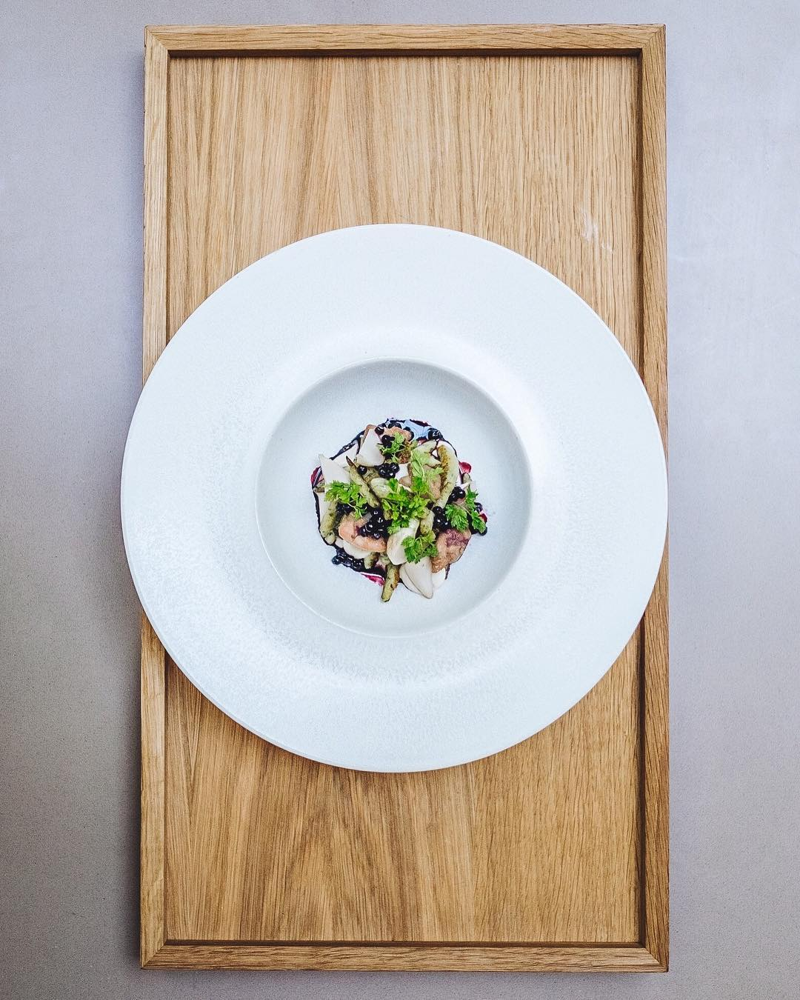

Čierny Koreň podľa @fachbratislava — Normy Jedál
Brzlík, zemiak, bryndza a čierny koreň.
Túto pestrú dobrotu nájdete na našom à la carte menu vo FACH Reštaurácii. Ak ste ju ešte neochutnali zastavte sa dnes, zajtra alebo v sobotu. Otvárame o 18:00 a už teraz sa na vás tešíme. Vchod do reštaurácie nájdete medzi Bistrom a Juice shopom ✨ #FACHBratislava #FACHRestaurant